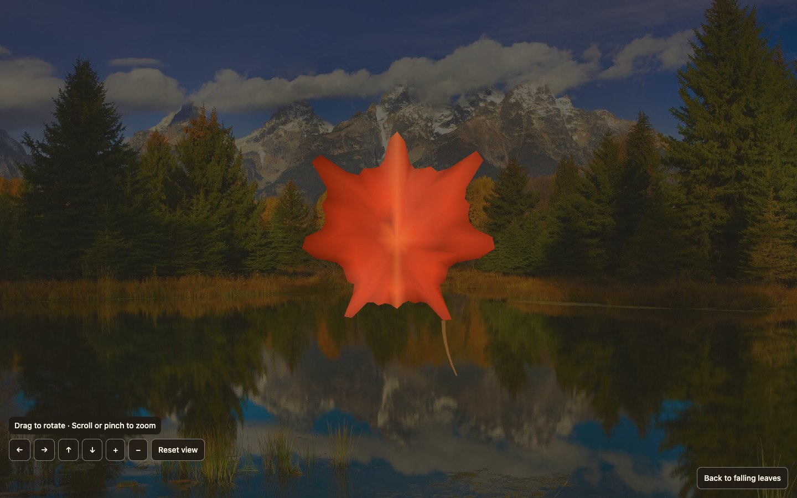
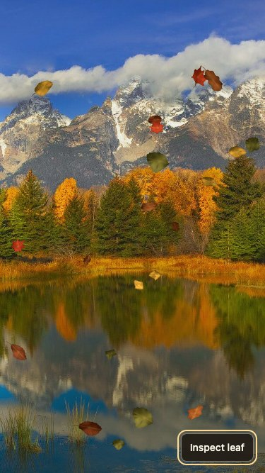

You are a senior front-end engineer with strong experience in Three.js and
interactive WebGL scenes. Build a full-screen section for a web page with
a falling-leaf effect using the 3D model leaves.glb, which is
attached.
The section layers real 3D leaf geometry over an autumn landscape. Each leaf falls along its own swaying path, and nearby leaves are pushed away from the mouse before easing back toward that path.
leaves.glb (9,825,968 bytes) contains the
Web Leaf Assets scene. Copper oak, crimson maple, golden
birch, olive aspen and russet beech supply the geometry, vertex colours
and shared normal map. Each selected mesh has 157 vertices.
oboinastol.com_2301.jpg (1920×1080) was selected from the
project for its still lake and amber woodland. It fills the section with
a proportional cover crop.
src/pages/gsap-animations.njk provides the section and
controls. leaves.css styles the landscape and transparent
canvas. leaves.js exposes
mountAnimation(container, options) with play,
pause and destroy.
Three.js loads the GLB once. It uses one instanced batch per leaf variant, one orthographic camera for the falling effect and a perspective OrbitControls camera for the close-up. A frame-rate-independent timer advances the falling and spring motion in one loop. The desktop runs 44 leaves and the mobile layout runs 24.
A container observer fits the canvas without distorting the image. The page caps render resolution, stops drawing when hidden or off-screen, and uses a still frame under reduced motion. A keyboard-accessible pause and inspection controls are available.
parser.json.scenes = [parser.json.scenes[index]];
parser.json.scene = 0;
parser.json.animations = [];let ax = -leaf.dx * config.returnSpring;
const force = config.repulsionStrength * (1 - distance / radius) ** 2;
leaf.vx = (leaf.vx + ax * dt) * friction;
leaf.dx += leaf.vx * dt;dummy.updateMatrix();
mesh.setMatrixAt(index, dummy.matrix);
if (y + leaf.size < -halfHeight && leaf.y < -halfHeight) reset(leaf);timer.reset();
renderer.setAnimationLoop(running ? render : null);
if (!running) draw();npm ci
npm run build
python3 -m http.server 8080
Open
http://localhost:8080/gsap-animations.html#falling-leaves.
Edit desktopLeaves, mobileLeaves,
fallSpeed, repulsionRadius and
repulsionStrength in leaves.js.
The production build and JavaScript syntax check passed. Chrome rendered the section at 1440×900, 768×1024 and 375×667, including live resize. The browser probe confirmed one GLB fetch, five instanced draw calls per frame, visible pointer displacement, keyboard pause, inspection and Escape, reduced motion, and no application console errors.
An accelerated test confirmed that leaves leaving the bottom respawn just above the top. Destroy removed the canvas, hid the controls and stopped subsequent draw calls.

